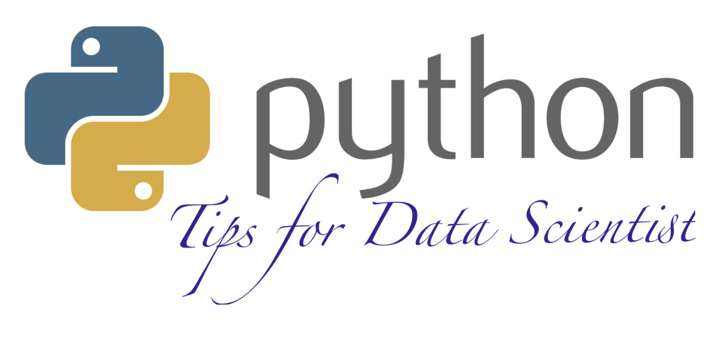

Welcome to my Python Tips for Data Scientist notes! In those notes, you will learn some useful tips for Data Scientist daily work. The PDF version can be downloaded from HERE.
Contents¶
- 1. Preface
- 2. Python Environment
- 3. Notebooks
- 4. Confidential Information
- 5. Primer Functions
- 6. Data Structures
- 7. Data Read and Ingestion with DataBase
- 8. Working with AWS S3
- 9.
pd.DataFramevsPySpark DataFrame- 9.1. Create DataFrame
- 9.2. Convert between pandas and pyspark DataFrame
- 9.3. Load DataFrame
- 9.4. First
nRows - 9.5. Column Names
- 9.6. Data types
- 9.7. Replace Data types
- 9.8. Fill Null
- 9.9. Replace Values
- 9.10. Rename Columns
- 9.11. Drop Columns
- 9.12. Filter
- 9.13. With New Column
- 9.14. Join
- 9.15. Concat Columns
- 9.16. GroupBy
- 9.17. Pivot
- 9.18. Unixtime to Date
- 10.
pd.DataFramemanipulation - 11.
rdd.DataFramemanipulation - 12. Online Courses and Useful Websites
- 13. Package Wrapper
- 14. Publish Package to PyPI
- 15. Model Deployment with Flask
- 16. API Book
- 17. Main Reference